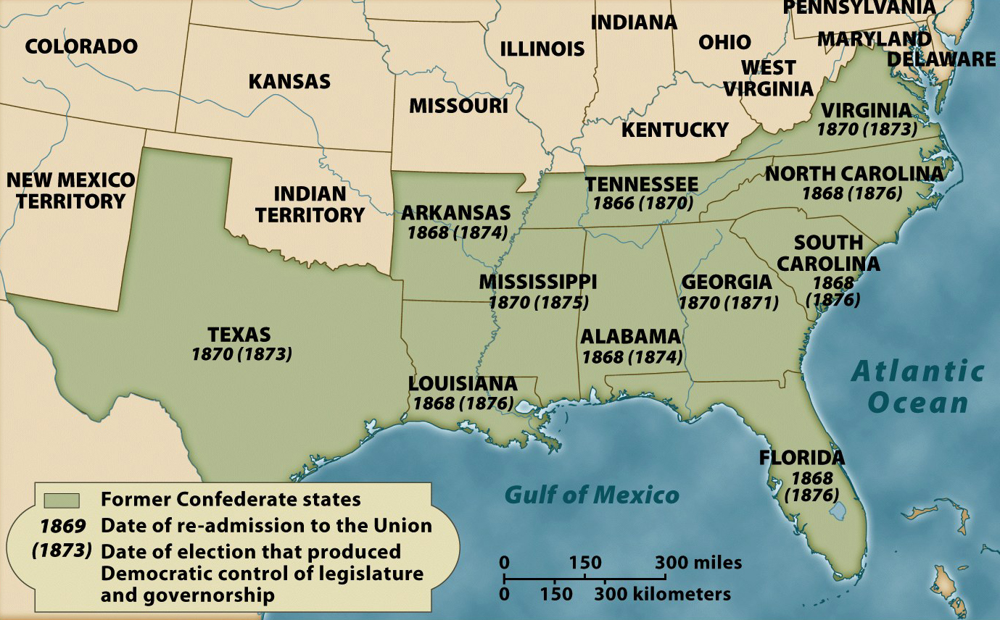

The Reconstruction of the
Confederate States, 1865-1876

The process of readmitting the 11 Confederate States into the Union invariably had two
steps. The first came when a state met the legal requirements for readmission, which
included acceptance of the Thirteenth, Fourteenth, and Fifteenth Amendments to the
Constitution. Once those requirements had been met, the state was considered to be
"reconstructed," and the U.S. government withdrew its troops and returned the state to
civilian control. The completion of this process in all 11 Confederate States marked the
end of the era of Reconstruction.
The second step in the process came when white, Southern voters were able to elect
white, Southern Democrats to office, thus supplanting white Republicans and African
Americans. This process was known to white Southerners as "redemption," and set the stage
for the disenfranchisement of black voters, as well as generations of racial oppression.
Note: Click on the image for a larger version.
Source: Eric Foner, Give Me Liberty! An American History (New York: W. W. Norton & Company, 2008).
|

{kind=link}